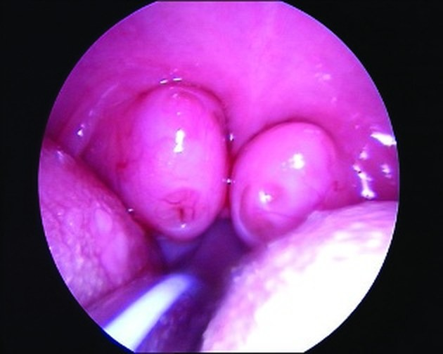

Сверка с PDF рубрикатора выполняется…
Гипертрофия аденоидов. Гипертрофия нёбных миндалин
Клинические рекомендации от 25.10.2024 · взрослые и дети
Основные положения
- Наличие у ребёнка глоточной и нёбных миндалин само по себе не является патологией. Показанием к обследованию служат жалобы, клинические проявления или сопутствующее заболевание, на течение которого могут влиять аденоиды и нёбные миндалины.
- Диагноз:
- гипертрофия нёбных миндалин: жалобы, анамнез, фарингоскопия с обязательной оценкой нижнего полюса миндалин;
- гипертрофия аденоидов: дополнительно инструментальное подтверждение: эндоскопия носоглотки, рентгенография носоглотки или компьютерная томография (КТ).
- Пальцевое исследование носоглотки для диагностики аденоидов у детей не проводится.
- Тактика:
- есть показания: операция в плановом порядке;
- нет показаний или есть абсолютные противопоказания: динамическое наблюдение оториноларинголога.
- Консервативное лечение детям с гипертрофией аденоидов: только при признаках аденоидита. У детей младше 7–9 лет без осложнений и значимого влияния на качество жизни аденоидит не считается патологией: наблюдение.
Коды МКБ-10
Клиническая картина и классификация
Определения
- гипертрофия аденоидов: увеличение глоточной миндалины со стойким затруднением носового дыхания и (или) осложнениями: обструктивные нарушения сна, экссудативный средний отит, деформация лицевого скелета;
- гипертрофия нёбных миндалин: увеличение одной или обеих нёбных миндалин; бессимптомно или с храпом, остановками дыхания во сне, нарушениями глотания и артикуляции, деформацией лицевого скелета.
Аденоидит: реактивные воспалительные изменения глоточной миндалины как органа местного иммунитета в ответ на антигены, попадающие на слизистую носа и глотки. У детей младше 7–9 лет без значимого влияния на качество жизни и без осложнений (например, средних отитов) аденоидит не считается патологией.
Острый синусит считается рецидивирующим при 4 и более эпизодах за последний год. Острый средний отит считается рецидивирующим при 3 и более эпизодах за 6 месяцев или 4 и более эпизодах за 12 месяцев.
Этиология
- наиболее вероятные причины: вирусная инфекция, генетическая предрасположенность, факторы окружающей среды;
- роль бактериальной инфекции, гастроэзофагеального рефлюкса и аллергии дискутабельна;
- как правило, действует несколько факторов одновременно.
Особое внимание уделяется вирусу герпеса IV типа: герпетическая инфекция является одной из частых причин выраженной гипертрофии глоточной миндалины со стойкой обструкцией носоглотки.
Классификация
Классификация А. Г. Лихачёва: какую часть сошника прикрывает ткань глоточной миндалины.
- I степень: не более верхней трети сошника;
- II степень: от 1/3 до 2/3;
- III степень: более 2/3.
Классификация Б. С. Преображенского: расстояние от вертикали через середину язычка до края передней (нёбно-язычной) дужки делят на три части.
- I степень: миндалина занимает треть расстояния;
- II степень: две трети;
- III степень: миндалины достигают язычка и соприкасаются.
Клиническая картина
Жалобы и симптомы чаще всего отмечаются при гипертрофии III степени. При I и II степени пациенты, как правило, хотя и не всегда, жалоб не предъявляют.
- храп: постоянный, часто не зависит от положения тела во сне (в отличие от храпа при воспалении);
- в ряде случаев признаки синдрома обструктивного апноэ сна (СОАС): дневная сонливость, снижение успеваемости;
- значительно реже изменения прикуса и лёгкая дисфония.
Увеличенные нёбные миндалины у ребёнка перед аденотонзиллэктомией по поводу обструктивного апноэ сна

- нарушения дыхания во сне;
- стойкое затруднение носового дыхания: постоянно открытый рот, гипоназальность (закрытая гнусавость), сухость во рту;
- снижение слуха при экссудативном среднем отите, повторные острые средние отиты;
- даже при II степени после простуды заложенность, постназальный затёк и кашель до нескольких недель;
- у школьников частые, в том числе рецидивирующие, острые синуситы.
- основная жалоба: кашель, как правило продуктивный, ночной и утренний (постназальный затёк);
- может развиваться и при небольших размерах глоточной миндалины;
- при гипертрофии аденоидов II–III степени одновременно заложенность носа и кашель.
Реактивные изменения глоточной миндалины после простуды или на фоне аллергического ринита у детей младше 7–9 лет физиологичны, если:
- нет осложнений (средних отитов, острого синусита);
- кашель или затруднение носового дыхания не нарушают сон и дневную активность.
Симптомы не патогномоничны.
Дифференцируют с- острым и хроническим риносинуситом;
- аллергическим, вазомоторным и гипертрофическим ринитом;
- искривлением перегородки носа;
- инородными телами и новообразованиями полости носа и носоглотки.
Гипертрофия аденоидов часто сопутствует острому и хроническому синуситу и аллергическому риниту.
Клиническая картина у взрослых не отличается от таковой у детей.
Жалобы и анамнез
- длительность заболевания и с чем связано начало;
- динамику жалоб и их влияние на сон и дневную активность;
- проводившееся лечение, его эффект и нежелательные явления;
- сохраняются ли симптомы вне эпизодов ОРВИ и как выражены сейчас по сравнению с прошлым;
- сопутствующие, прежде всего аллергические, заболевания: наблюдение, лечение, планируемые операции;
- перенесённые операции и манипуляции в полости носа, включая назотрахеальную интубацию и назальные зонды.
Скрыто: определения рецидивирующих отитов и синуситов, роль герпесвирусов.
Анатомия и физиология в учебнике: глотка
Диагностика
Наличие у ребёнка глоточной и нёбных миндалин не является патологией.
Обследование оправдано при- жалобах;
- клинических проявлениях;
- сопутствующем заболевании, на которое могут влиять аденоидит, гипертрофия аденоидов или нёбных миндалин.
- гипертрофия нёбных миндалин: жалобы, анамнез, физикальное обследование с фарингоскопией и обязательной оценкой нижнего полюса миндалин;
- гипертрофия аденоидов: дополнительно эндоскопия носоглотки, рентгенография носоглотки или КТ.
Степени гипертрофии носоглоточной миндалины

Степени гипертрофии нёбных миндалин по Б

Картина при задней риноскопии

Осмотр
- каждый пациент: осмотр оториноларинголога (амбулаторно и при госпитализации).
Пальцевое исследование носоглотки детям в амбулаторной практике не проводят: результаты крайне субъективны, процедура неприятна и может травмировать структуры глотки.
Лабораторные исследования для диагностики гипертрофии аденоидов и нёбных миндалин не применяют; их используют лишь для диагностики сопутствующих заболеваний.
Эндоскопия полости носа и носоглотки
- симптомы, характерные для гипертрофии аденоидов.
Метод первого выбора, в том числе для контроля после операции.
- предпочтителен гибкий эндоскоп с сохранением изображения (фото или видео);
- метод первого выбора для дифференциальной диагностики и оценки носоглотки после операции, в том числе в отдалённые сроки;
- ригидный эндоскоп дети, особенно дошкольники, переносят хуже;
- осмотр без сохранения изображения значительно менее объективен при последующих консультациях.
Эндоскопическая картина глоточной миндалины

Рентгенография носоглотки
- симптомы, характерные для гипертрофии аденоидов: оценка размеров глоточной миндалины (боковая проекция).
Компьютерная томография
- сложные случаи: дифференциальная диагностика гипертрофии аденоидов с другой патологией носа со сходными симптомами;
- одновременная диагностика нескольких заболеваний.
Тимпанометрия
- гипертрофия аденоидов: объективная оценка среднего уха.
Исследования, которые не показаны
Мазки из глотки на микрофлору для диагностики гипертрофии миндалин не показаны: условно-патогенные бактерии есть и у здоровых, рост или его отсутствие не говорит о риске и прогнозе.
Консультации специалистов
- клинические и анамнестические признаки аллергического ринита;
- атопическая бронхиальная астма;
- атопический дерматит.
- глазных симптомах, повторяющемся чихании и зуде в носу;
- ринологических симптомах, связанных с цветением, животными или другими ситуациями;
- повторных приступах кашля, свистящего или затруднённого дыхания, стеснения в груди, особенно ночью и рано утром;
- атопическом дерматите, крапивнице и других аллергических заболеваниях кожи;
- рецидивирующих острых средних отитах или риносинуситах.
- признаки повторяющихся обструктивных нарушений сна.
- врождённые или приобретённые изменения челюстно-лицевой области.
- подозрение на персистирующую вирусную, прежде всего герпесвирусную, инфекцию.
Показание: хотя бы один признак, сохраняющийся 3 месяца и более:
- увеличение лимфатических узлов в 3 группах и более (не менее 3 узлов в каждой);
- увеличение печени и (или) селезёнки;
- абсолютное число нейтрофилов ниже возрастной нормы и (или) общее число нейтрофилов ниже 5×10⁹/л.
Оториноларинголог оценивает симптомы, решение о лабораторном поиске вирусов принимает инфекционист.
Лечение
Тактика
- есть показания: хирургическое лечение в плановом порядке;
- нет показаний или есть абсолютные противопоказания: динамическое наблюдение оториноларинголога;
- хроническая или врождённая сопутствующая патология: операция только по согласованию с профильным специалистом.
- шок;
- острая стадия инфаркта миокарда и нарушения мозгового кровообращения;
- поздние стадии тяжёлых инфекционных и онкологических заболеваний;
- тяжёлое, крайне тяжёлое или терминальное состояние из-за сопутствующих заболеваний.
- неконтролируемое или плохо контролируемое течение сопутствующей соматической патологии;
- аномалии строения носа, резко повышающие риск серьёзных интраоперационных осложнений.
Консервативное лечение оправдано только при клинических и анамнестических признаках воспаления глоточной миндалины (аденоидита) или нёбных миндалин (тонзиллита) при наличии соответствующих жалоб или осложнений.
Аденотомия
Аденотомия: восстановление проходимости носоглотки при отсутствии противопоказаний.
- частые или регулярные эпизоды обструктивных нарушений сна: храп, в ряде случаев дневная сонливость и вялость;
- экссудативный средний отит 3 месяца, резистентный к консервативному лечению и подтверждённый тимпанометрией;
- рецидивирующие острые средние отиты или острые синуситы (3 эпизода и более за 6 месяцев или 4 и более за 12 месяцев) после исключения других причин, прежде всего иммунодефицита, и при неэффективности медикаментозной профилактики;
- хронический синусит с выраженными симптомами или частыми обострениями при неэффективности 1–2 курсов консервативного лечения;
- стойкое затруднение носового дыхания без других причин, ухудшающее качество жизни или ведущее к деформации лицевого скелета (цефалометрия, заключение ортодонта или челюстно-лицевого хирурга);
- заключение других специалистов об аденотомии как этапе лечения сопутствующего заболевания (например, перед кардиохирургическим вмешательством).
Ориентир при объективной оценке нарушений сна: индекс апноэ-гипопноэ.
- 5–15: среднетяжёлая форма;
- более 15: тяжёлая форма.
Тонзиллотомия, сочетанная операция, тонзиллэктомия у взрослых
Тонзиллотомия детям с гипертрофией нёбных миндалин: уменьшение размеров миндалин.
Показание- частые или регулярные эпизоды обструктивных нарушений сна (храп, в ряде случаев дневная сонливость и вялость); ориентир: индекс апноэ-гипопноэ, как при аденотомии.
Сочетанная гипертрофия аденоидов и нёбных миндалин: аденотомия с тонзиллотомией по показаниям к аденотомии.
Такое вмешательство проводится только под общим обезболиванием с обязательным визуальным контролем операционного поля; в раннем послеоперационном периоде пациент находится под наблюдением в ЛОР-отделении стационара.Взрослые с гипертрофией нёбных миндалин и синдромом обструктивного апноэ сна: тонзиллэктомия при отсутствии противопоказаний.
Для рекомендации о тонзиллэктомии у взрослых не указаны ни уровень убедительности рекомендаций, ни уровень достоверности доказательств. Кроме того, в разделах о госпитализации, послеоперационном обезболивании и реабилитации речь идёт только об аденотомии и тонзиллотомии, тонзиллэктомия у взрослых не упоминается.
Консервативное лечение аденоидита
Консервативное лечение детей с гипертрофией аденоидов: только при признаках аденоидита.
Признаки аденоидита- продуктивный кашель вследствие постназального затёка;
- выделения из носа;
- периодическое затруднение носового дыхания.
У детей младше 7–9 лет без значимого влияния на сон, приём пищи и дневную активность и без осложнений (например, средних отитов): наблюдение.
- Промывание (орошение) полости носа всем пациентам с аденоидитом.
- 1–2 раза в день изотоническими или гипертоническими (1,5–3%) солевыми растворами на основе морской воды;
- облегчает туалет полости носа, уменьшает симптомы, улучшает условия для местных препаратов;
- детям дошкольного возраста промывание большими объёмами не рекомендуется: высокий риск средних отитов.
- Местные антибактериальные препараты по специальным показаниям.
ПоказанияВведение в полость носа растворов антибиотиков, предназначенных для парентерального, внутриконъюнктивального или ушного применения, не рекомендуется: они не предназначены для полости носа и могут нарушать мукоцилиарный транспорт.
- слизисто-гнойные выделения из носа и по задней стенке глотки в течение всего дня;
- отсутствие улучшения за 7–10 дней противовоспалительной терапии.
- назальный спрей фрамицетина;
- дексаметазон + неомицин + полимиксин B + фенилэфрин: детям старше 2,5 года;
- тиамфеникола глицинат ацетилцистеинат: раствор для ингаляций.
- Карбоцистеин и другие мукорегулирующие препараты пациентам старше 2 лет.
- карбоцистеин в форме сиропа, в том числе карбоцистеина лизина моногидрат, курсом от 1 до 3 месяцев;
- уменьшает постназальный затёк и повышает вероятность разрешения сопутствующего экссудативного среднего отита;
- при монотерапии отличие от выжидательной тактики заметно лишь к 2–3-й неделе;
- другие муколитики, в том числе местные, одновременно не назначают: усиливают затёк.
- Мометазонoff-label назальный спрей по 50 мкг в каждый носовой ход 1 раз в сутки, 1–3 месяца: детям старше 2 лет при сопутствующем аллергическом рините. Ни гипертрофия аденоидов, ни аденоидит, ни назофарингит не зарегистрированы в России в качестве показания ни для одного топического глюкокортикостероида; пометка off-label (в КР — знак #) обозначает применение вне инструкции по медицинскому применению.
Масла, в первую очередь масло туи, при гипертрофии аденоидов и аденоидите не применяются: их эффективность не доказана, а в полости носа они угнетают функцию ресничек мерцательного эпителия, нарушают эвакуацию секрета и повышают риск бактериальной инфекции.
Ежедневное промывание полости носа растворами антисептиков не рекомендуется: эффективность не доказана, нарушается мукоцилиарный транспорт, возможны местные дисбиотические изменения.
Послеоперационное обезболивание
После аденотомии и (или) тонзиллотомии: нестероидные противовоспалительные препараты (НПВП) или парацетамол.
Показания к обезболиванию- жалобы на боль;
- отказ от еды и питья;
- повторная рвота и тошнота.
| Препарат | Доза у детей |
|---|---|
| Ибупрофен | 8–10 мг/кг на приём, не более 30 мг/кг в сутки, внутрь в лекарственной форме, соответствующей возрасту (таблетки, покрытые оболочкой, — с 6 лет); детям младшего возраста — ректальные суппозитории. |
| Кетопрофен | С 6 лет — гранулы для приготовления раствора для приёма внутрь (кетопрофена лизиновая соль), 40 мг на приём до 3 раз в день. |
| Парацетамол | 10–15 мг/кг на приём, не более 60 мг/кг в сутки, в любой лекарственной форме, соответствующей возрасту. При невозможности приёма внутрь и отсутствии суппозиториев — парентерально 15 мг/кг на введение. |
Послеоперационное ведение
Осмотр оториноларинголога после аденотомии и (или) тонзиллотомии: перед выпиской и амбулаторно через 7–14 дней после выписки.
Охранительный режим 5–7 дней после операции.
- ограничение контактов: не посещать детский коллектив и людные места;
- ограничение физической нагрузки;
- исключение перегревания, особенно головы и шеи, в том числе горячей пищи и питья.
Дисфония более месяца после операции: направление к логопеду-дефектологу.
Симптомы обструктивных нарушений сна более 6–8 недель после операции: направление к специалисту по расстройствам сна.
Алгоритм действий врача
Профилактика и диспансерное наблюдение. Показания к госпитализации
Профилактика
Специфическая профилактика гипертрофии аденоидов и нёбных миндалин отсутствует. Поскольку важную роль играют респираторные вирусы, следует соблюдать общие правила профилактики острых респираторных вирусных инфекций (ОРВИ). Ряд лекарственных препаратов может применяться для плановой и экстренной профилактики аденоидита у детей.
Детям старше 1 года из групп риска по респираторным инфекциям рекомендованы стандартизированные растительные препараты для приёма внутрь из группы прочих антисептиков для профилактики эпизодов ОРВИ, а также для сокращения длительности и уменьшения тяжести последующих эпизодов аденоидита.
К ним относятся препараты, содержащие корень алтея, цветки ромашки, хвощ, листья грецкого ореха, тысячелистник, кору дуба и одуванчик лекарственный. Они назначаются также для лечения аденоидита при появлении симптомов ОРВИ в качестве монотерапии или в комплексе.Детям старше 3 лет при появлении симптомов острого назофарингита применяют комбинированный препарат лизоцим + пиридоксин для сокращения длительности и уменьшения тяжести последующего аденоидита.
Детям из групп риска по респираторным инфекциям: лизаты бактерий для сокращения длительности и тяжести эпизодов аденоидита и осложнений.
Плановая профилактика курсами по инструкции 2–3 раза в год, пероральные и местные формы.
Для профилактики аденоидитов и их осложнений у детей может рассматриваться применение местных пробиотиков на основе бактерий нормальной микрофлоры глотки.
Обратиться к врачу, если после простуды 2 недели и более сохраняются:
- заложенность носа;
- храп;
- снижение слуха;
- кашель (при исключённой патологии нижних дыхательных путей).
Показания к госпитализации и выписке
- плановая аденотомия и (или) тонзиллотомия при наличии показаний и отсутствии противопоказаний.
Аденоидит лечат амбулаторно или в консультативно-диагностическом отделении.
Выписка после операции- удовлетворительное общее состояние;
- отсутствие осложнений.
Факторы, влияющие на исход лечения
- хронические соматические заболевания: возможно обострение в раннем послеоперационном периоде;
- аллергический ринит: выше вероятность неполного регресса назальных симптомов (передней и задней ринореи, в меньшей степени заложенности);
- ожирение: выше вероятность сохранения обструктивных нарушений сна;
- гастроэзофагеальная рефлюксная болезнь: выше вероятность сохранения назальных симптомов и риск инфекционных осложнений.
При гипертрофии нёбных миндалин медикаментозное лечение аденоидита крайне малоэффективно в отношении обструктивных нарушений сна.
При наличии у ребёнка сопутствующего заболевания, способного повлиять на результат операции, врач должен проинформировать об этом пациента или родителей до операции.
Скрыто: состав растительных препаратов.
Источник и актуальность
Журнал сверки
Неточности и противоречия в тексте рекомендации
- Рекомендация о тонзиллэктомии взрослым с гипертрофией нёбных миндалин и СОАС дана без уровня убедительности рекомендаций и уровня достоверности доказательств, а в разделах о госпитализации, обезболивании и реабилитации упоминаются только аденотомия и тонзиллотомия.
- Для хронического аденоидита в разделе 1.4 предложены два кода: J31.1 («как возможный вариант кодирования») и J35.8 («например, аденоидит»).
- В комментарии к ибупрофену фраза о суппозиториях оборвана («ректальные суппозитории (у детей младше) 2 лет»), поэтому возрастная граница неоднозначна.